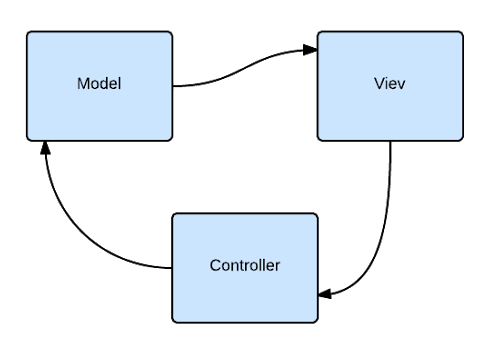
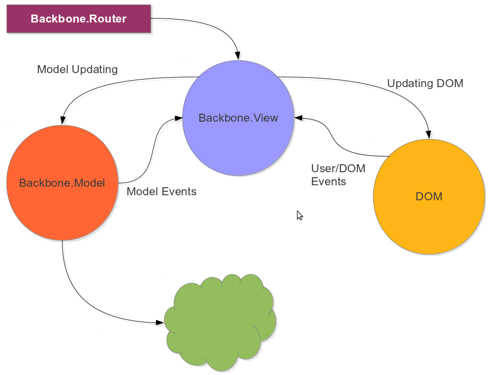
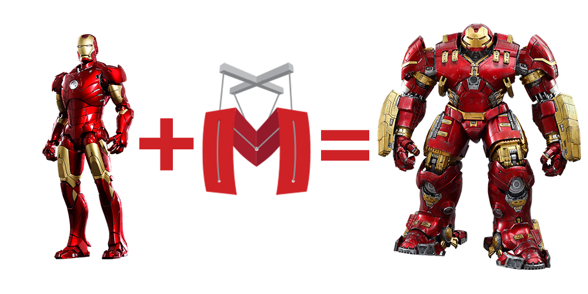

Backbone.js
class: center, middle .title[ Front-end training # Backbone.js ] --- # MVC architecture  - Model–View–Controller (MVC) is a software architectural pattern for implementing user interfaces. - It divides a given software application into three interconnected parts, so as to separate internal representations of information from the ways that information is presented to or accepted from the user. --- <img src="img/backbone-logo.png" style="width: 60%;" /> Backbone.js gives structure to web applications by providing models with key-value binding and custom events, collections with a rich API of enumerable functions, views with declarative event handling, and connects it all to your existing API over a RESTful JSON interface. .columns[.col-40[ Unboxing: - Model - View - Collection - Router Dependencies: - Underscore.js - jQuery ].col-60[  ]] --- # Model ```javascript President = Backbone.Model.extend({ defaults: { name: 'anonymous', surname: '' }, initialize: function() { alert('Hello world'); } }); var president = new President({ name: 'Vova', surname: 'Putin'}); president.set('name', 'Vladimir'); president.set({ name: 'Barack', surname: 'Obama'}); var name = president.get('name'); ``` --- # REST REST (Representational State Transfer) is an architectural style for designing distributed systems. - Resources expose easily understood directory structure URIs. - Representations transfer JSON or XML to represent data objects and attributes. - Messages use HTTP methods explicitly (for example, GET, POST, PUT, and DELETE). - Stateless interactions store no client context on the server between requests. State dependencies limit and restrict scalability. The client holds session state. ### CRUD (create, retrieve, update, delete) ``` Create : POST /presidents Retrieve: GET /presidents/1 Update: PUT /presidents/1 Delete: DELETE /presidents/1 ``` --- # Model interacting with the server ```javascript President = Backbone.Model.extend({ urlRoot: '/presidents' }); // create new model var president = new President({ name: 'Vova', surname: 'Putin'}); president.save(); // update model president.save({name: 'Barack'}, { success: function (model) { alert('success'); }, error: function (model) { alert('error'); } }); //get model var somePresident = new President({id: 2}); somePresident.fetch(); //delete model somePresident.destroy(); ``` --- # Model other features ```javascript President = Backbone.Model.extend({ validate: function( attributes ){ if( attributes.surname != "Tymoshenko" ){ return "Tymoshenko can't be president"; } } }); president.on("invalid", function(model, error) { alert(error); }); var president = new President({ name: "Vova", surname: "Putin"}); president.on("change:name", function(model){ alert("Changed name to " + model.get("name"); ); }); ``` --- # Collection ```javascript PresidentsCollection = Backbone.Collection.extend({ model: President }); var president1 = new President({ name: "Vova", surname: "Putin"}); var president2 = new President({ name: "Barack", surname: "Obama"}); var presidentsCollection = new PresidentsCollection ([ president1, president2]); presidentsCollection.push(model, new President({ name: "Petro", surname: "Poroshenko"})); presidentsCollection.comparator = function(model) { return model.get('name'); } presidentsCollection.sort(); ``` --- # View ```javascript PresidentView = Backbone.View.extend({ initialize: function(){}, render: function(){ this.$el.html('<span>' + this.model.get("name") + ' - ' + this.model.get("surname") + '</span>') return this; // recommended }, events: { "click": "onClick" }, onClick: function() { alert("Click on " + this.model.get("name"); ); }, }); var presidentView = new PresidentView({ model: presidentModel }); ``` --- # Router ```javascript var AppRouter = Backbone.Router.extend({ routes: { "*actions": "defaultRoute", // example.com/#anything-here "president/:name": "presidetRoute", // example.com/#president/Barack } }); var router = new AppRouter; router.on('route:presidetRoute, function(name) { alert(name); }) Backbone.history.start(); ``` --- # When to use? - I use RESTful API - My team has many experienced JavaScript developers - Application requires integration with some other 3rd party libraries - Application is going to do a lot of heavy DOM manipulations --- # More power?  - Application, Item View, List view, Template Cache, Callbacks, etc... --- class: center, middle .title[ ## Thanks ## The End ]